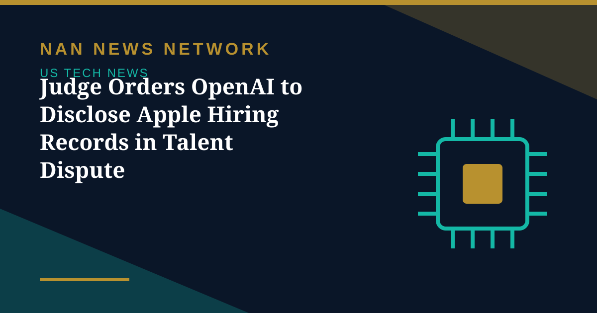

Judge Orders OpenAI to Disclose Apple Hiring Records in Talent Dispute

A federal judge has ordered OpenAI to disclose records related to its hiring of Apple employees, in a ruling that sharpens the legal scrutiny around the artificial intelligence industry's aggressive war for talent. Judge Edward Davila issued the discovery order on October 28, 2026, and OpenAI must comply by November 11, 2026.
Narrowed, not denied
The order follows Apple's narrowed requests for records. While the company must document its efforts to prevent the misuse of confidential information, the court denied Apple's broader request for access to internal investigations, marking a departure from the wider discovery Apple had originally sought. Former Apple employee Tang Tan is central to the dispute over talent acquisition and confidential information handling.
The ruling follows standard federal discovery rules but signals that companies can expect stricter judicial requirements to document internal data safeguards during periods of rapid staff turnover. For an industry built on poaching specialised researchers, that paperwork may soon matter as much as the paychecks.
Sources: Wisevoter court report, October 28, 2026
More on US Tech News
- SK Hynix Profit Jumps More Than Sevenfold as AI Rally Faces Earnings Test
- Apple Unveils M6 MacBook Pro and iMac With Faster On-Device AI
- OpenAI Launches GPT-6.1 Terra With Lower API Prices
- Musk Says SpaceX Closed $40 Billion in GPU Debt and Warns of a Neocloud Shakeout
- AI Inference Prices Have Fallen as Much as 80 Percent Since June, Analysis Finds
- White House Names Jay Clayton as AI Czar to Lead 'Super Intelligence Force'
- SpaceX Q3 2026: $14.6 Billion Revenue as Starship Flight 15 Targets a Dual-Stage Catch
- US Orders DeepSeek Stripped From Federal Civilian Systems